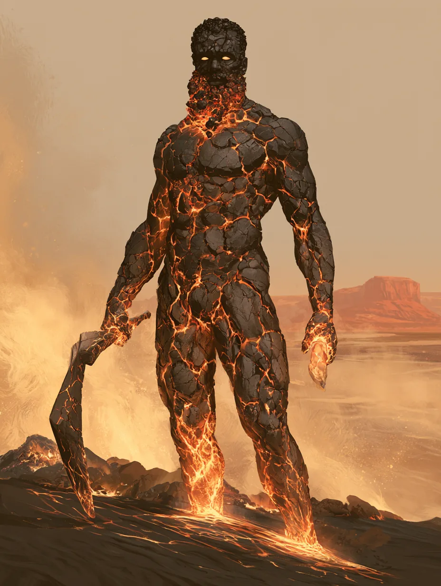

Black skin like cooled basalt, cracked all over with a slow magma glow that brightens when they do. Short dark curls faded close at the sides. Their beard is a bank of live embers. Their eyes are glass marbles.
They wear nothing. A body that runs this hot has no use for cloth, and there is nothing beneath the stone that would need covering. The boomerang they carry is knapped obsidian — glass off the same beach they came up on.
The smile arrives before anything else does.
They are a Cinderkin — flesh and earth and fire together — and they are one year old at most.
What they are
Cinderkin take after both halves of their making. From the Earthkin, humanoids whose bodies are made of flesh and earth:
Stoneskin: Gain a permanent +1 bonus to your Armor Score and damage thresholds at character creation.
From the Emberkin, humanoids whose bodies are made of flesh and fire:
Ignition: Mark a Stress to wreathe your primary weapon in flame until the end of the scene. While the weapon is ablaze, it gives off a bright light, and you gain a 1d6 bonus to damage rolls with that weapon.
What they did not take is worth knowing: they are not Immovable, and they are not Fireproof. The boomerang they set alight can burn them the same as anyone.
Where they come from
The black-sand beach at The Cinderline — the last fresh water before a long stretch of desert, and a river deposit that has not given up essentia in years. Their community is Warborne: a place that is, or was, ravaged by war.
Brave Face: Once per session when you would be forced to mark a Stress, you can spend a Hope instead.
Essentia
There are fine grains of essentia in Temperance's body. They do not use it.
They were formed at the same hour the first colossus came out of the ground outside Wyllin's Gulch — the same quake, half a desert away. Nobody has told them what that means.
The sheet
Guardian (Vengeance) · Level 1 · Warborne Cinderkin, Mixed Ancestry (Earthkin / Emberkin)
Agility +2 · Strength 0 · Finesse +1 · Instinct +1 · Presence 0 · Knowledge −1
Evasion 9 · Armor 6 · Hit Points 7 · Stress 7 · Hope 2 · Proficiency 1 Damage thresholds — Major 11 · Severe 21
Weapons
| Trait & range | Damage | Burden | Feature | |
|---|---|---|---|---|
| Boomerang (primary) | Agility, Very Close | d10+1 magical | One-handed | — |
| Small Revolver (secondary) | Finesse, Far | d8 physical | One-handed | Quick Shot: Spend 2 Hope to gain a +4 bonus to primary weapon damage. |
Damage dice scale with Proficiency — at level 1 that is one die each, so the boomerang rolls 1d10+1 and the revolver 1d8.
Armor
None worn. Armor Score and thresholds come from the domain card Bare Bones:
When you choose not to equip armor, you have a base Armor Score of 3 + your Strength and use the following as your base damage thresholds: • Tier 1: 9/19 • Tier 2: 11/24 • Tier 3: 13/31 • Tier 4: 15/38
Table ruling: for Temperance, Bare Bones keys off Agility rather than Strength. Armor Score is therefore 3 + Agility 2 + Stoneskin 1 = 6; thresholds are 9/19 + level 1 + Stoneskin 1 = 11/21.
Class & subclass
Unstoppable (class feature): Once per long rest, you can become Unstoppable. You gain an Unstoppable Die. At level 1, your Unstoppable Die is a d4. Place it on your character sheet in the space provided, starting with the 1 value facing up. After you make a damage roll that deals 1 or more Hit Points to a target, increase the Unstoppable Die value by one. When the die's value would exceed its maximum value or when the scene ends, remove the die and drop out of Unstoppable. At level 5, your Unstoppable Die increases to a d6. While Unstoppable, you gain the following benefits: • You reduce the severity of physical damage by one threshold (Severe to Major, Major to Minor, Minor to None). • You add the current value of the Unstoppable Die to your damage roll. • You can't be Restrained or Vulnerable.
Frontline Tank (Hope feature): Spend 3 Hope to clear 2 Armor Slots.
At Ease (Vengeance foundation): Gain an additional Stress slot.
Revenge (Vengeance foundation): When an adversary within Melee range succeeds on an attack against you, you can mark 2 Stress to force the attacker to mark a Hit Point.
Domain cards
Both from Valor. Bare Bones (Ability, Recall 0) is quoted above.
I Am Your Shield (Ability, Recall 1): When an ally within Very Close range would take damage, you can mark a Stress to stand in the way and make yourself the target of the attack instead. When you take damage from this attack, you can mark any number of Armor Slots.
Experiences
Born Yesterday +2 · Slow to Calm +2
Steed, inventory & gold
A giant scorpion. A Minor Stamina Potion, and a secret key. One handful of gold.